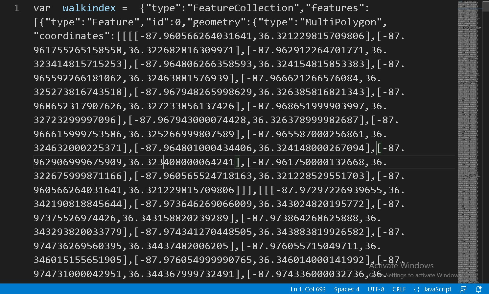

An overview of the Missouri Experience Builder app.
The Missouri Experience Builder app's pie chart functionality.
The Missouri Experience Builder app's mobile layout, including the layout issues described above.
Experience Builder is an ESRI product that allows for the creation of web apps using a drag-and-drop app builder. In pursuing our problem statement's objective of creating some complex apps that would be useful to people with an existing understanding of walkability, the group created an Experience Builder app that does several things. First, it displays a map of the core-based statistical areas in the state of Missouri along with a map of the EPA's final walkability index, with a slider allowing for a direct comparison of the two maps. This allows for quick observation of walkability in different CBSAs. Next, it shows a table that ranks census block groups within the state from most to least walkable, with the components of the index and the block group's associated CBSA also listed. When an entry is clicked, the map zooms in on the selected block group. In addition to this, when a block group is clicked on the map, a chart element on the right reads out the employment mix within that block group as a pie chart. While this information wouldn't make much sense to a person unfamiliar with walkability indexes, someone familiar with what the numbers mean could use this app to come to quick conclusions about relative walkability and the influence of employment mix on walkability indexes in Missouri. Finally, we developed a mobile layout that placed several of the widgets inside a widget controller element, allowing for use on phones and computers.
It was decided to exclude this effort from the final delivery for several reasons. For one, the mobile layout needs work in order to bring it to full usability. The main view works well, but the widgets display in a way that makes them somewhat unattractive and difficult to utilize as fully intended. As well, there are some awkward limitations to Experience Builder, such as an inability to round numbers in tables that gives ours a rather unprofessional appearance. It was also noted that some of the documentation feels relatively unclear even to someone with experience in ArcGIS Online, which lead to some tasks taking longer than expected for a drag-and-drop app builder. Finally, there has been some bugginess encountered, such as the map not displaying the first block group in the table despite the data being present and not filtered out. As we were nearing the end of our development time, it was decided to shelve this aspect of the project rather than improving it to the point where it could be usable. If picked back up, future work could include fixing the mobile layout so that it displays properly, rounding some of the data directly in the web map to limit the significant digits displayed, and exploring the app until the source of the block group bug is found.
An overview of the Missouri Experience Builder app.
The Missouri Experience Builder app's pie chart functionality.
The Missouri Experience Builder app's mobile layout, including the layout issues described above.
Leaflet is an open source javascript library for desktop as well as mobile-friendly interactive maps. For a possible solution to our problem statement , our team attempted to create a web map (keeping all elements of the map as open source as possible) to show off walkability index's within the United States. This would allow members of the public, as well as cuty planners to get a better understanding of how walkable their surrounding neighborhoods are, all without the use of purchasing any Esri Licenses. The final map that was created was able to show off how walkable areas of New York City area based on individual census blocks. With each census block being outlined, with it's individual walkability score being outlined when the user hovered over the area with their mouse.
This process involved several steps, from laying down a greyscale basemap (taken from https://github.com/Zverik/leaflet-grayscale?tab=readme-ov-file), to taking data from ArcGIS Pro, clipping it down to only showcase the data from New York City, and converting it into a GeoJSON format in ArcGIS Pro and changing the file name to a .js
From there, the data was then brought into GitHub and a variable was assigned to the GeoJSon file. There the data was brought into the map, laying ontop of the previously created greyscale map
After the layer was brought in, interactivity was introduced, by having the individual census block become highlighted whenver the mouse was hovering over the area, as well as a small info window to showcase what the individual walkability score of that area was
A geolocator was added to the map, to allow for users to walk around the area and see the walkability scores of their individual areas area as they walk around the city